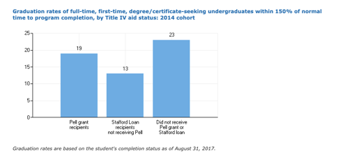

Clackamas Community College and the Oregon Promise Grant
Executive Summary & Problem Statement:
We addressed three main research questions:
- Did OPG induce more underserved student populations to attend Clackamas Community College (specifically rural, Hispanic and low-income)?
- Did OPG help recipients attend more semesters of college (persist)?
- How does the policy climate and results surrounding OPG compare with other state promise programs?
The answers to these questions lead us to a set of recommendations both at the state and Clackamas college policy levels.
Data & Methods:
To assess the impact that the Oregon Promise Grant had on the Clackamas Community College population we used data from the Clackamas Financial Aid Office. The data represent all students who applied for financial aid in the 2016 and 2017 school year, representing about 8,000 of the annual 22,000 students at Clackamas per year. All of the students in our sample attend college at least half-time, filled out the FAFSA and are degree-seeking. It is important to note that not all students who are eligible for financial aid apply for it, especially given the relatively early FAFSA deadline. Therefore, we cannot examine certain students who may have been eligible for Oregon Promise but who did not apply for financial aid.
Findings:
Finding I: The Oregon Promise Grant may have induced more low-income students to attend Clackamas Community College, but funds were distributed mostly to higher-income students. Ethnically, Clackamas is more diverse than Oregon, but Rural students are still underrepresented.
Overall, 700 students from Clackamas received the Oregon Promise grant. Demographically, these students generally reflected the overall Clackamas population: they were largely white and non-Hispanic, however, they were much more likely to be low income (61% compared with 33% overall) and slightly more likely to come from rural areas (5.8% compared with 3.9% overall). This suggests that Oregon Promise may have induced more low-income students to attend Clackamas: students in the 4th quartile of all adjusted gross income grew by over 1,000 students, increasing their share of the student financial-aid applicant body from 16% to 33%. Please see this interactive Tableau Dashboard for a more in-depth look at how Clackamas demographics changed after Oregon Promise.

However, due to the middle-dollar design, the dollar amount disbursed in the OPG overwhelmingly favored higher income students. State reports show higher income, non-Pell-eligible students receive 80% of the state dollars designated to the Oregon Promise program. The state funds one non-Pell student at the price of four full-Pell-eligible students, which means that the lowest-income and therefore most vulnerable students in terms of graduation rates are receiving the least state aid. Figure 1 in the appendix shows that, compared with non-Pell-eligible students, low-income, Pell-eligible students are four percentage points less likely to graduate.
Increasing racial and ethnic diversity in a homogenous state like Oregon (85% percent of the population is white and 11% is Hispanic) may be difficult. Clackamas is already more diverse than the state. However, the rural population is vastly underrepresented at Clackamas. According to the U.S. Census, 19% of Oregon residents live in rural areas while just under 5% of students at Clackamas attended a rural high school.
Finding II: There is a negative correlation between access to OPG and the number of semesters completed through the spring of one year of enrollment. However, both selection bias or statistical noise as explanations for this negative correlation.
Using data drawn from student-level enrollment and financial aid records, we estimated the correlation between access to the Oregon Promise Grant and retention at Clackamas. The retention variable is the number of semesters completed and deemed ‘satisfactory.’ Our main analysis involves comparing persons who enrolled at Clackamas for the first time in 2017-2018 to students who were enrolled in 2016-2017. Importantly, with the currently available data, our comparison groups are imperfectly comparable, because the criteria for being included in each cohort cannot be made the same.
With that caveat in mind, we estimated the correlation between greater access to OPG (i.e., being in the 2017 cohort) and the number of semesters completed. We find that the 2017-2018 cohort — the cohort with greater access to OPG — completed an estimated 0.37 fewer (satisfactory) semesters through the spring of their first year. One possible explanation is selection bias. That is, students in the 2016 cohort are a mix of two types of students, those in their first year at Clackamas after finishing high school and those who are older and in some cases in their second or later year at Clackamas. On the other hand, students in the 2017 cohort are likely to be largely students attending college for the first time. For that reason, one might expect the 2016 cohort to be likely on average to complete more semesters of college because, unlike the 2017 cohort, the 2016 cohort contains a substantial number of students who have already made it through their first year. A second possible explanation is that the difference between the numbers of semesters completed is largely or entirely statistical noise: we would not expect every cohort of students at Clackamas to have exactly the same average number of semesters completed. We would expect natural variability, and with only two cohorts in our data we cannot rule out the possibility that the difference is statistical noise.
Finding III: The Oregon Promise grant did not have as much success in increasing overall state college-going as states like Tennessee and Rhode Island. This may be due in part to a lack of strong championship from top leadership such as the governor and a lack of supporting policies such as emphasizing FAFSA completion or providing college enrollment mentorship. Additionally, Oregon did not set aside consistent funding for the promise grant program, which confuses students by causing the eligibility requirements to change each year. In an analysis of FAFSA completion rates, I found that Oregon has an average FAFSA completion rate of 48%, which is one of the lower rates in the country. This could signify a major barrier to college-going for many students.
Recommendations for State and Clackamas:
Recommendation I: Rural students need more targeted recruitment to reach fair representation in college-going among Oregonians
Oregon Promise may have helped increase rural representation at Clackamas by a small amount - about 1 percentage point. However, the larger issue appears to be that rural students are quite underrepresented. This may be due to transportation issues, lower FAFSA completion, or broader issues reflected in trends seen around the nation in lower rural student performance. Clackamas could improve the college-going rate among rural students by forming bonds with rural “feeder” high schools to encourage FAFSA completion and to perhaps create specific college tour dates for these high schools. Clackamas could also create policies to connect rural students to one another to build community and perhaps form carpools if transportation is a large barrier to college. As a first step, Clackamas could use the high school classification we created in this analysis to identify and survey their rural population to find out more about the barriers these students face in college access and persistence.
Recommendation III: In order to get the most from Oregon Promise dollars and spread the money equitably among students, OPG should be supported with other policies targeted at college-going barriers and student needs
The state and Oregon community colleges should create a shared set of priorities for higher education and make sure that there are individual policies to address each goal going forward. It seems that the Oregon Promise grant alone attempts to fill a number of needs, such as increasing college-going, improving college persistence and lowering college debt. Community colleges seem to want the grant to help attract students who otherwise wouldn’t have attended college while the state seems to prefer to reduce financial burden on more middle class students. From a more macro-perspective, the goal of the program seems to be to create a more educated workforce prepared to enter the knowledge economy and bring industry to Oregon.
However, it is unclear whether the tuition money on its own is an efficient way to accomplish any of these goals. The state could likely see more from their investment if they created separate policies to take a well-rounded approach to improve college going, persistence, completion and quality. After adopting a state-wide push for FAFSA completion, Tennessee boosted its FAFSA completion rate to 75%. I recommend that Clackamas and the state of Oregon pursue an outreach campaign to improve FAFSA completion. I compiled a second Tableau Dashboard to help guide stakeholders toward particularly low-completing high schools. Policies aimed at the root of the agreed upon issues and goals may boost the effectiveness of Oregon Promise.
Appendix
Figure 1. Clackamas Community College Graduation rates by Pell status
